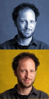

Registration
Agenda
Day 1, Tuesday
Welcoming
Active inference & deep generative models
Speaker: Karl Friston, Professor of NeuroscienceAffiliation: University College London, UK
Coffee break
What do they learn? Neural Networks, compositionality and interpretability
Speaker: Dieuwke Hupkes, PhD student with Willem ZuidemaAffiliation: University of Amsterdam, the Netherlands
Poster session
Lunch break
Cognitive Computing with Neurons: Large-scale Functional Brain Modelling with the Neural Engineering Framework
Speaker: Terrence Stewart, Post-doctoral research associate working with Chris EliasmithAffiliation: University of Waterloo, Canada
Contributed talk: Active dendrites implement probabilistic temporal logic gates
Speaker: Pascal Nieters, PhD studentAffiliation: University of Osnabrück, Germany
Poster Session + coffee break
Contributed talk: Modeling reciprocal belief coordination in social interaction based on free energy minimization
Speaker: Sebastian Kahl, Research AssistantAffiliation: University of Bielefeld, Germany
The role of time in misunderstanding
Speaker: Colin Phillips, Professor of LinguisticsAffiliation: University of Maryland, USA
Botanical garden tour
Dinner
Day 2, Wednesday

Affiliation: Donders Institute and University of Cambridge
Understanding vision at the interface of computational neuroscience and artificial intelligence
Speaker: Tim KietzmannAffiliation: Donders Institute and University of Cambridge
Coffee break
Leveraging the speaker-listener symmetry
Speaker: Will Monroe, Research scientist at DuolingoAffiliation: Duolingo, Stanford University, USA
Poster session
Lunch
Contributed talk: Learning semantically meaningful world representations through embodiment
Speaker: Viviane Clay, PhD studentAffiliation: University of Osnabrück, Germany
Contributed talk: Learning robust visual representations using data augmentation invariance
Speaker: Alex Hernández-García, PhD studentAffiliation: University of Osnabrück, Germany
Contributed talk: A new approach to characterizing sensory and abstract representations in the brain
Speaker: Dimitrios Pinotsis, Associate ProfessorAffiliation: City, University of London, UK and MIT, USA
Coffee break
Contributed talk: Mechanisms of self-organisation bridging the gap between low- and high-level cognition
Speaker: Pieter de Vries, Assistant ProfessorAffiliation: University of Groningen, Netherlands
Expectation-based language processing in minds and machines
Speaker: Roger Levy, Associate Professor in the Department of Brain and Cognitive SciencesAffiliation: Massachusetts Institute of Technology, USA
Best poster award of 250€ kindly sponsored by Salt and Pepper
Session close